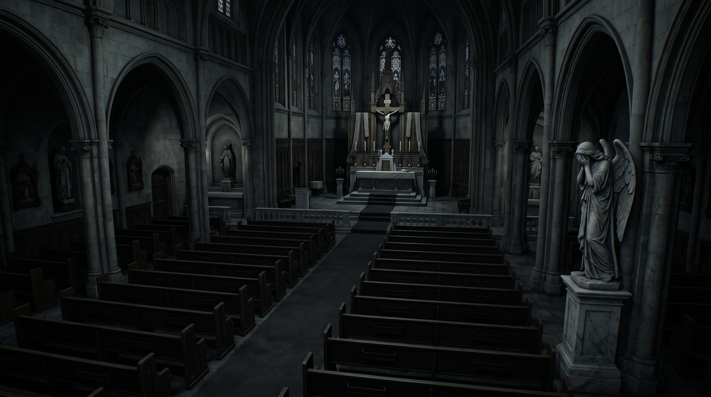

Your night shift starts at 12:00 AM and completes when morning church carillon bells ring at 6:00 AM (approx. 6 real-time minutes at standard speed).
The consecrated stone statues remain frozen while observed on surveillance feeds. If unmonitored, they will advance swiftly toward your security office!
All defenses (door maglock, halogen window beam, vent shutter, CCTV) drain backup battery. A total blackout leaves you completely defenseless in the dark!
Behavior: Freezes under camera observation. Check on her regularly.
Behavior: Stalks through the dark cloister corridor visible right outside your front observation window.
Behavior: Crawls low inside the HVAC return duct. Listen for metallic clanging.
The magnetic door lock drains power at a heavy rate every second it is sealed. Lock only when statues are actively at your doorway threshold!
Spotlight and downlights consume battery rapidly. Tap keys [Z], [W], and [R] briefly to confirm threats rather than leaving them on.
Lower the digital monitor with [SPACE] when not scanning rooms to minimize baseline electrical drain.
If battery reaches 0%, all lights and motorized locks immediately disengage, leaving your office exposed in total darkness!
Click any key button below, then press your desired key on your keyboard to rebind it.
Configure audio output levels for atmospheric organ music, building servos, and jumpscares.
Select your preferred night shift pace. The clock speed is configured here in the lobby to keep the in-game HUD clean and immersive.
Authentic 6-minute shift (approx. 60 seconds per in-game hour). The intended survival experience with full strategic tension.
Accelerated 3-minute shift (approx. 30 seconds per hour). Fast-paced action with rapidly moving stone statues.
Hyper-speed 90-second shift (approx. 15 seconds per hour). Extreme test of reflexes and lightning-quick door reactions.
ANOMALY INFILTRATION
The parish carillon bells chime for early morning Mass. The marble statues freeze once more on their consecrated pedestals. You survived the night.